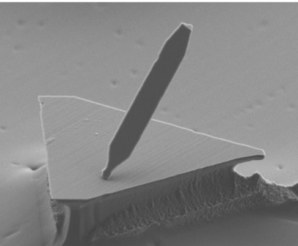
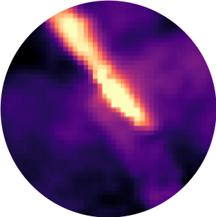

Research Directions

Quantum Materials
 Based on careful selection or optimization of material properties - like crystal structure, chemical composition, and dimensionality - we can create systems that host highly correlated electronic and magnetic phases, where the laws of quantum mechanics manifest on macroscopic scales. Some specific areas of interest are:
Based on careful selection or optimization of material properties - like crystal structure, chemical composition, and dimensionality - we can create systems that host highly correlated electronic and magnetic phases, where the laws of quantum mechanics manifest on macroscopic scales. Some specific areas of interest are:
- Spins and electrons in low dimensions
- Frustrated magnets
- Semiconductors with strong spin-orbit coupling
- Quantum phase transitions
Quantum Defects

Nitrogen-vacancy (NV) centers in diamond are highly controllable and coherent quantum systems that can be used to detect magnetic fields with high sensitivity, broad frequency bandwidth, and nanoscale resolution. Our goals are to optimize the preparation of NV centers in diamond. In addition, we are investigating a number of quantum defects in other materials platforms with the potential for easier integration into sensing apparatuses.
Sensing and Microscopy

Quantum defects can be used as a nanoscale cryogenic microscopy and spectroscopy tool. In our lab, we interface quantum defects with quantum materials in order to study the emergent nanoscale phenomena present in these materials with unprecedented resolution and precision. We develop quantum control techniques to extend the bandwidth and resolution of these quantum sensors, and integrate additional in situ magnetic, electrical, and optical stimuli.